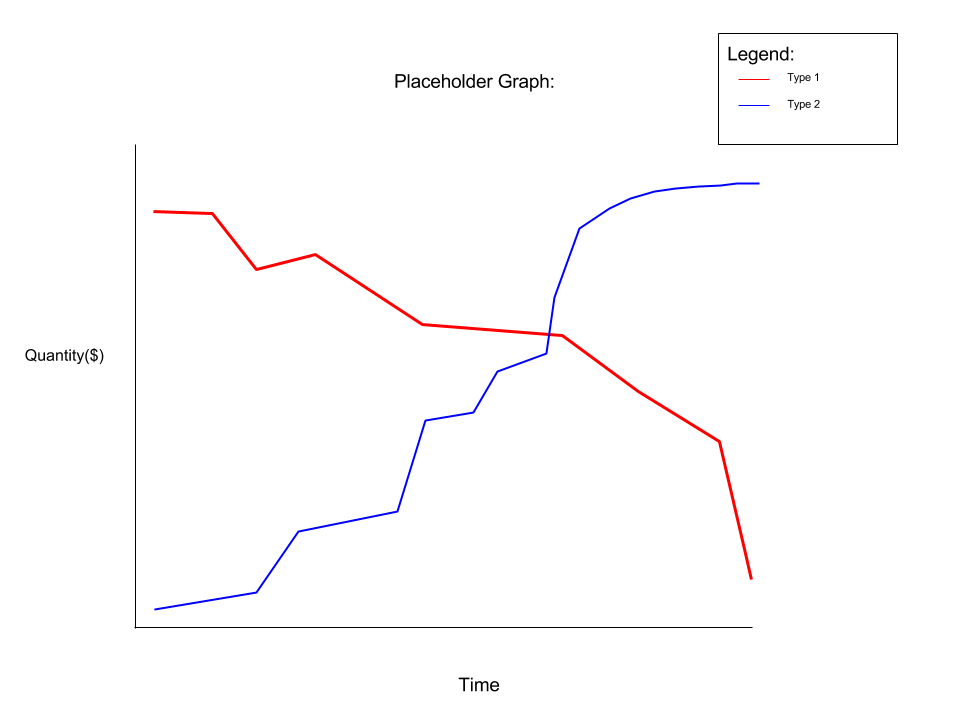

Frequently Asked Questions
Why should I donate?
The Mandarin portion of CLIP is funded entirely by donations. The district does not provide any funding for Mandarin materials and supplemental services such as Teacher’s Aides and CLIP Art classes. Without sufficient donations, CLIP cannot provide these services to its students.
What does the donation support?
Mandarin instructional materials, Mandarin library books, Mandarin homework club, Teacher’s Aides, technology, CLIP Art, student Mandarin assessment tests, and Mandarin curriculum development. Details can be found on the CLIPCO annual budget at http://www.cusdclipco.org/cac.html.
What happens if CLIPCO does not get enough donations?
CLIP depends on CLIPCO to raise the funds needed to keep the program running. In the event that CLIPCO is unable to raise the target donation amount, services such as Teacher’s Aides, CLIP Art and homework club will have to be cut from the budget.
How much should I donate?
Each year the CLIPCO Board of Directors assesses the amount needed to support the program and determines the suggested donation amount. For the school year 2016-2017, the suggested donation is $450 per student for CLIP Kindergarten to 6th grade students and $225 for CLIP 7th grade to 8th grade students.
How much do the other Mandarin Immersion schools cost?
CLIP is the only public Mandarin immersion school program available in the Cupertino Union School District. However, there are private Mandarin immersion school programs in the region. Below are the 2014-2015 tuition fees for two of these private schools. The fees do not include additional fees such as enrollment, registration, and material fees.
International School of the Peninsula (Palo Alto) $24,500+
Yew Chung International School (Mountain View)$18,800+
What are the methods of donation?
Donations can be made by check or credit/debit card.
For check payments, please fill out the pledge form and deposit it along with the check (payable to ‘CLIPCO’) at the Meyerholz Elementary school office, to your teacher, or your CLIPCO Representative.
Credit card, debit card, or PayPal payment can be made online at http://www.cusdclipco.org/donate.html.
Why am I been asked to donate at the beginning of the school year?
Services provided to CLIP students are billed to CLIPCO by the school district. During October, CLIPCO is billed a large sum, equal to roughly half of its budget, to cover personnel expenses such as teacher’s aides. Then in February, CLIPCO is asked to approve the budget for the following school year, which it can only do if it has sufficient funds to support the budget. For these reasons, donation drive takes place early in the school year to ensure that the program is not disrupted due to financial circumstances.
Why is CLIPCO asking for donations when it appears to have enough funds in its bank account?
In order to ensure that the CLIP program is not disrupted mid-year due to financial circumstances, CLIPCO must have the entire school year’s funds available at the start of each school year. As CLIPCO spends its funds to pay off program expenses throughout the current school year, it simultaneously raises the funds for the following school year. For this reason, the cash balance does not appear to change significantly through out the school year even though large sums of transactions are taking place. The following graph demonstrates the typical cash flow that takes place during the school year:

The graph demonstrates that for the 2012-2013 school year, CLIPCO started with $338,000 and spent roughly $300,000 on program expenses, leaving it with just $40,000. However, it raised $290,000 during the same period which kept its cash balance at a stable number throughout the year.
How do I get corporate matching for my donation?
CLIPCO is a non-partisan and non-profit 501(3)(c) organization. Many companies provide their employees the benefit of corporate matching for their favorite non-profit organizations. Since each company does it differently, please contact your company’s HR or Benefits department to inquire about how your donation may be maximized through a corporate matching program.
Organization name: Cupertino Language Immersion Program Community Organization
Organization EIN (Tax ID): 920193803
Organization purpose: Financially support the Cupertino Language Immersion Program, an educational program within the Cupertino Union School District.
Organization address: P.O. Box 1344, Cupertino, CA 95015
Organization contact person: Bin Liao and Sammi Hsu, Co-Treasurers (clipcotreasurer@gmail.com)
Is my donation tax-deductible?
Donations to CLIPCO, a non-profit 501(c)(3) organization, is 100% tax-deductible. We will be sending out the tax receipt to each donor by January 31, 2017.
Can I donate on behalf of another family?
As long as the family has agreed to accept a donation on their behalf, CLIPCO is happy to accept the generous donation. If you are interested in sponsorship, whether on the giving or the receiving end, please contact one of your CLIPCO Representatives.
We are unable to make a donation this year. What can we do to help out?
We understand that not every family has the ability to donate the suggested donation amount. We ask that each family donate an amount that is within their ability. There are also other ways to help that will make a difference, such as organizing small fundraisers to help raise money for CLIP, or do volunteer work that helps CLIPCO keep its expenses down. Please speak to your class representative or anyone on the CLIPCO board to learn about your options.
The Board of Directors can be found on our contact page.
When is the contest taking place?
The Contest kicked off on October 17, and it will end at midnight on November 15th, 2016.
Why do we need a contest to drive donations?
The Direct Give Contest is an annual event that encourages friendly competition to raise funds for CLIP. This is the fifth year that the contest has taken place. Since it started in 2010-2011, the participation rate has jumped from roughly 50% in the previous years to nearly 100%! The high participation rate allows us to keep the suggested donation amount low since the more families donate, the less each family needs to donate in order to keep the program afloat. The high participation rate is also a strong indication of the community’s commitment and support of the program.
What are the prizes this year?
Continuing the tradition of the contests in the last three years, this year there are three prizes to be had. They are:
Individual Prize: A CLIP Pencil Case and 2 Pencils – awarded to those donating at least $225 per student.
Class Prize: Super cool T-shirt with Our Year of the Rooster Logo – awarded to the home room (Meyerholz) or grade (Miller) that meets 90% participation rate and 90% target dollar amount.
Grand Prize: A Sling Backpack with Our Year of the Rooster Logo -- awarded to the top 3 home room (Meyerholz) or grade (Miller) with the highest percentage towards the target dollar amount.
See Full Contest Details and Rules
When will the winners receive the prizes?
Individual prizes will be handed out to students and parents on specific dates (to be announced) during lunch time at the GLC. For any given week, the donation must be received by Sunday in order to guarantee that the student's name is on the donated list.
For the Class and Grand prizes, the winning classes will receive their prizes in December before the end of 2016.
For CLIP Middle school students, the prizes will be distributed by the CLIPCO representatives to their respective classes.
What is the “CLIPCO Supporter’s Honor Roll”?
CLIP depends completely on donations to fund the curriculum programs not covered by normal school district funds. For this reason, we are grateful for the financial support of our community and would like to recognize our donors. Donors are recognized on our website throughout the school year and on the December CLIPCO Newsletter after the Direct Give Contest. The donation amounts that qualify for the tiers below are per student.